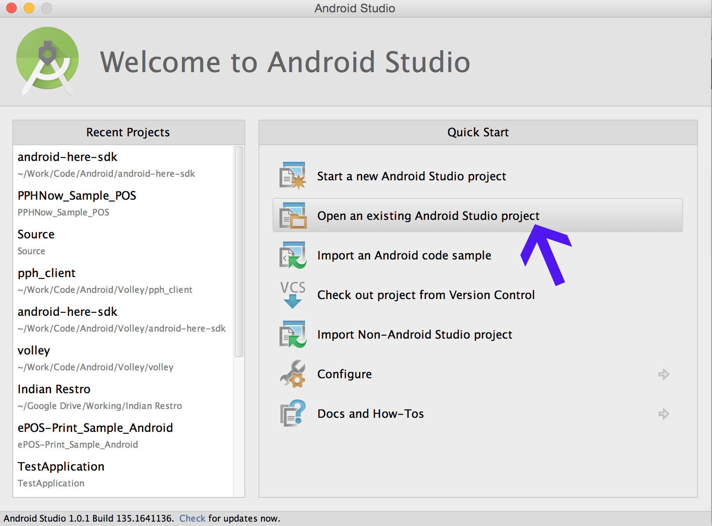
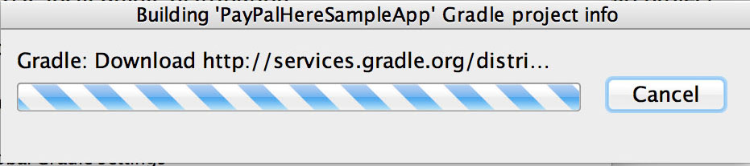
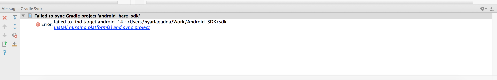
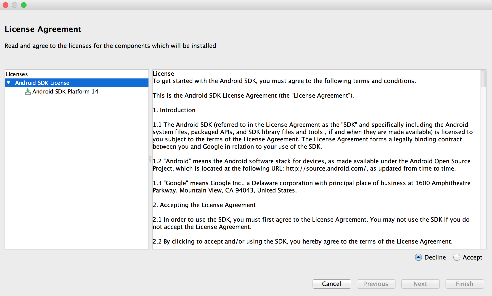
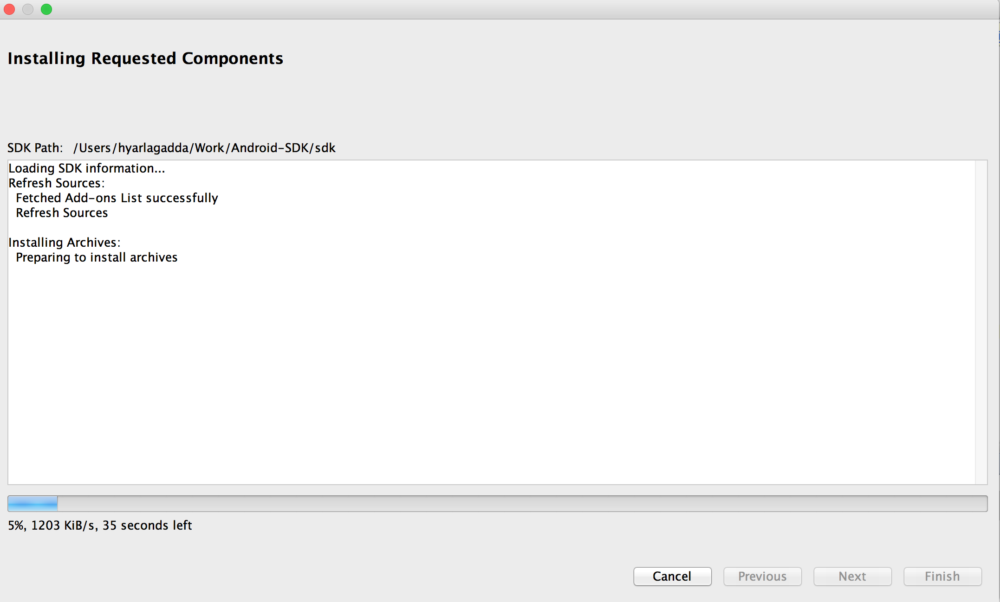
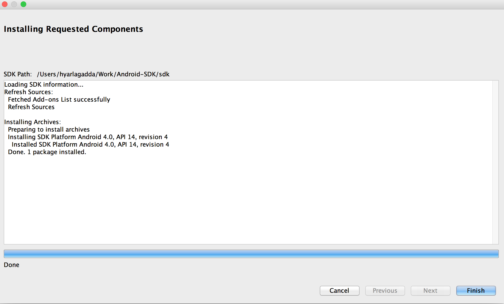
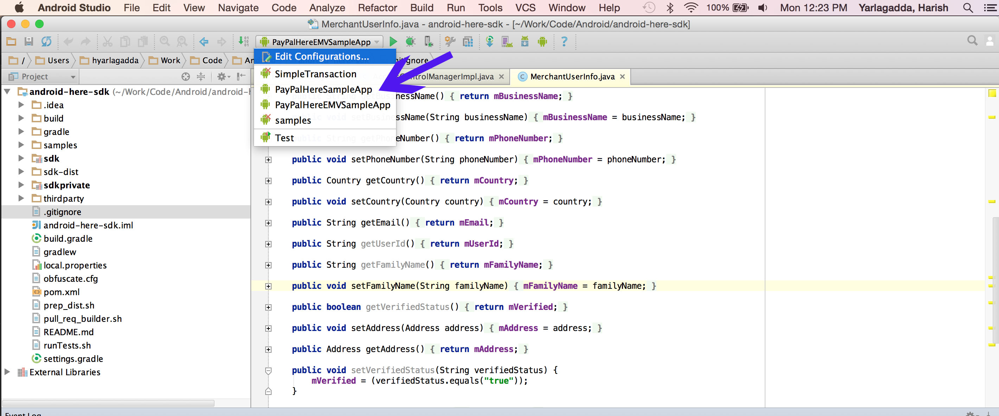

PayPalHere SDK Sample Apps
Overview
This section will guide you through the necessary tools you will need for compiling the sample apps (which will come as part of the PayPalHere SDK release) and step by step process of compiling the sample apps.
As part of the release, you will get two different sample apps along with source code.
- PayPalHereSampleApp: This application showcases the functionality of
- Creating Invoice
- Performing different operations with invoices such as adding tip, discount e.t.c
- Taking the payment using the mag-stripe card reader
- Taking payment using Key-In payment data
- Showcasing the functionality of Auth-Capture
- Performing the refund
- PayPalHereEMVSampleApp: This application showcases the functionality of
- Taking payment using the EMV Card reader
- Performing the refund without and with card using EMV Card reader
Necessary Tools
- Android Studio (1.0.1 or higher)
- Maven (3.1.1 or higher)
- Latest Android SDK
Steps to be followed before compiling the sample app
Android Gradle build system doesn't allow referencing the .aar files locally by keeping them in libs folder. Instead they have to be referenced as remote or local maven artifacts. For that first we will install the PayPalHereSDK-X.X.aar file in local Maven repositories and reference it as local maven artifact.
Command for installing PayPalHereSDK-X.X.aar as local maven artifact
mvn install:install-file -Dfile=[location where the PayPalHereSDK.aar files exists ex. sdk/PayPalHereSDK-X.X.aar] -DgroupId=com.paypal.merchant.sdk -DartifactId=paypal-sdk -Dversion=X.X -Dpackaging=aar
Note: Please replace X.X with the version of the release. You can find the version in the name of the release library. Ex: PayPalHereSDK-X.X.aar where X.X represents the release version.
Importing and compiling the sample app in Android Studio
- Open your Android Studio application and select "Open an existing Android Studio project"

- Once you click on above option it opens up the finder window to select the project. Please go to the location where sample app is stored and point to build.gradle file of the sample app which you would like to open.
- Now there will be a pop-up asking you to choose which gradle you want to use. Please select "Use default gradle wrapper" and click on OK.

- Now Android studio will download required gradle version from internet. Please make sure you are connected to proper internet connection. If you didn't encounter any errors, please skip the below 4 steps.

- If there are any missing plugins or packages which are needed then Android Stdio will prompt as shown below

- If you encounter the above error, please click on the link in the error message. In this case "Install missing platforms(s) and sync project". Once you click on the link, you will see the pop up showing up the missing packages/platforms as shown below. Select agree option and click on next button to continue.

- Now you will see the missing package(s) getting downloaded and installed by Android Studio

- After completing the installation of missing package(s) "Finish" button will be enabled and once you click on that button, Android studio will start loading the application again.

- Once you are done with the above steps successfully with out any errors, you should be able to see the imported application in the tool bar of Android Studio.

- Now select the application which you imported and click on run button to compile and install the application on any of the connected device or on Emulator.
Note: Please note that you need to connect android phone to the computer and enable USB debugging in the setting of the Android phone

Happy Playing with the Sample App :)